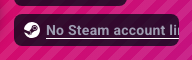
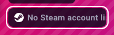
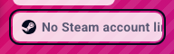

Account head
Who this account is, at the top of an account page: the breadcrumb, the Steam picture, the name, the ID a person reads out to support, the Steam account the items go to, the money pair with Add funds, and the four tabs. On My items it takes its stage form: the band is the most valuable item's own (D-242). Everything on this page is drawn by design/system/components/account-head.css through index.css.
Anatomy

The head holds atoms and never redraws them: the Breadcrumb (level 1, .crumb), the Avatar (level 1, .avatar--xl), the Text link (level 1, .link--quiet .link--hi, the Steam name), the Figure (level 1, the pair at .fig--title, the cap's price, the missing figure in the no-Steam chip), the Button (level 1, Add funds, .button--primary .button--m) with its Badge pin (level 1), the Tabs (level 1, .tabs--plate) and the Icon (level 1). The head's own part is the band and its art, the chips, the money plate and how it places the pair, and on the stage the skin, its foil, its name behind it and the cap.
| Part | Class or element | What to change there |
|---|---|---|
| The head | .account-head, --stage (a region labelled My account) | the stack of breadcrumb, band and tabs; its own geometry, --account-head-* |
| Breadcrumb | .crumb (Breadcrumb) | the head only sets the 12px under it |
| Band | .account-head__row | the Cases pink under the stripes with its lit top edge; on the stage the item's grade (--item-tier) from the card's dark; the operators over its right end from 1200px (::after, --art-footer-agents) |
| Who | .account-head__who, __names, __name; .avatar--xl | the picture (64, 88 from 600px on the plain form), the name in heavy type, in italic capitals on the stage |
| Chips | .account-head__id, --steam; .account-head__steam (a link) | the ID and the Steam account on a dark plate over the art; with none linked, the chip is the missing figure and the way to Settings |
| Money plate | .account-head__money, __figs, __add | the pair and Add funds on one dark plate; the balance lit in gold, the captions in spaced capitals, a hairline between the two |
| Skin | .account-head__show, __skin, __foil | the most valuable item breaking out over the band's top, turned --account-head-tilt, breathing, its contact shadow and the foil across its own shape |
| Word | .account-head__word | the skin's name in display capitals behind it, dark ink on the grade |
| Cap | .account-head__cap, __k | Highest value, the gun and skin and its price, over the skin, never under it |
| Tabs | .tabs.tabs--plate (Tabs) | the bar plate under the band; the current tab is not a link (D-58) |
| Spoken heading | .account-head__sr | the screen's H1 for a screen reader, where the head is the screen's own head (My items) |
Variants and sizes
Two axes. Sizes below are read from the render at this page's width, not from the stylesheet.
- Form = the page. Plain on the account pages (History, Profile, Settings; grey so far); stage on My items, where the band shows what the account holds at its best (D-242).
- Content = what is linked and held. A Steam account linked shows its name as a quiet white link; none linked, the chip says so and leads to Settings (D-150). On the stage, nothing readable held hides the skin: the band is the Cases pink again and the operators stand where the skin stood.
- Width = the head's own breakpoints. The picture is 64 on a phone and 88 from 600px on the plain form, 64 on the stage; the padding 16, then 24 from 900px; the operators from 1200px. The stage stacks under 900px, skin first; under 600px the money plate takes the band's width and Add funds its own line.
Plain
At a phone the plain form is wider than the screen: 369px at its narrowest with a Steam account linked, 432px with none, as kit.css draws it, against the 328px a 360 screen gives. No coloured screen wears it yet, so the frame scrolls it here and the step that colours the account pages fixes it (reported, not redrawn).
Band , picture , name
Stage
The anatomy's sample: band , picture , name
Stage, nothing readable held
The figure wears hidden, as items.js sets it: band
When to use
At the top of every page of the account, once: it says whose account this is and what it holds before anything is done with it. The money pair is the header's (balance and value of items held, both in the coin, never summed, CLAUDE.md "Information architecture"), at the band's scale, with the one act that adds money. Its words are the screens': Balance, Value of items held, Add funds, Highest value (microcopy 5.1-9), No Steam account linked (5.11-2).
Rule and anti-rule
Use it
My items: the stage form, its band in the grade of the most valuable item held, the money plate under the name and the four tabs under the band.
Take another component
A section's title inside a page is a Section head. Who is signed in, in the header on every page, is the Account menu. A case's own head on the case screen is the Case head. Another player's public shelf is titled by the Item grid, not by this head: the money pair is the account's own.
States
The head's own control is the no-Steam chip, a link to Settings: live at rest below, point at it and reach it with Tab. Every other control in it keeps its atom's states (the breadcrumb's links, the Steam link, Add funds, the tabs).
Snapshots of the same chip, dark on the left and light on the right, taken with reduced motion.



--line-focusThe stage follows what is held, and items.js writes it from the grid: on the band --item-tier, the grade of the most valuable readable item; on the figure hidden when nothing readable is held (shown above, under Variants); on the skin --skin, its picture as an absolute address for the foil's mask, and .is-short on a pistol; the word, the name and the price as text. The scripts join the system at step 8, so here they are the values the script sets. A pistol, drawn short:

- No press face and no disabled look.
kit.cssdraws neither on the chip; the head refuses nothing itself (D-58). - Motion. The skin breathes as the Home's mode objects do (
mode-card-float) and the foil crosses it every 4.2s (outcome-foil); with reduced motion both stop.
node design/kit/tools/shoot-states.js http://localhost:8765/ account-head # re-shoot after a change to account-head.css or its tokens node design/kit/tools/shoot-states.js http://localhost:8765/ account-head --check # step 9: fails if a snapshot drifted
In the code
| Token | Kind | Dark | Light |
|---|
Read live from tokens.css. One component token: the skin's contact shadow is the ground's navy at 55% on the grade in both themes, a fill no role paints (--bg-page turns to paper in the light theme). The band is a coloured plate, its words --text-on-plate; on the stage with its skin the name stands on --bg-card and reads --text-hi. Geometry, type and motion come straight from the primitives and from the head's own --account-head-*.
File: design/system/components/account-head.css, loaded by design/system/index.css in the molecules' group. The rename map moves the screens onto it at step 6: rows 16 (.avatar--xl), 19 (.link--hi on the Steam name), 27 (.tabs--plate) and 28 (.fig--title). The screens' inline --skin: url(../concept/...) resolves where the stylesheet reads it; items.js rewrites it absolute at load, and step 6 keeps that.
<div class="account-head account-head--stage" role="region" aria-label="My account">
<nav class="crumb" aria-label="Breadcrumb">...</nav><h1 class="account-head__sr">My items</h1>
<div class="account-head__row" style="--item-tier: var(--bg-rarity-2)">
<span class="account-head__word" aria-hidden="true">Asiimov</span>
<div class="account-head__who"><img class="avatar avatar--xl" ...><div class="account-head__names">...</div><p class="account-head__name">nightjar_cs</p></div>
<div class="account-head__money"><div class="account-head__figs"><span class="fig fig--money fig--title">...</span>...</div><a class="button button--primary button--m account-head__add" ...>...</a></div>
<figure class="account-head__show" data-show><span class="account-head__skin" style="--skin: url(...)"><img ...><span class="account-head__foil"></span></span><figcaption class="account-head__cap">...</figcaption></figure>
</div>
<nav class="tabs tabs--plate" aria-label="Account">...</nav>
</div>
Stands on: My items, My items, nothing held, My items, values not readable. Until step 8 those screens still read kit.css.